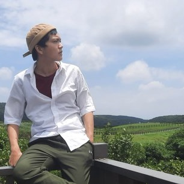

« On ne voit bien qu'avec le coeur. L'essentiel est invisible pour les yeux.»
- Antoine de Saint-Exupéry
I am an Ph.D. student in linguistics at National Tsing Hua University (NTHU, Taiwan).
My research interests include phonology and historical linguistics, with a special focus on Formosan languages.
My M.A. thesis is about the phonology of Takibakha Bunun (卡社布農語).
Here you can check out my CV and my Google scholar profile.
Phoaⁿ Jû-siâng [pʰuã˧ dzu˧ ɕiɑŋ˩˧] in Taiwanese (Hokkien) and 潘俞翔 [pʰan˥ y˧˥ ɕiɑŋ˧˥] in Mandarin.
Last updated: Sep. 8, 2022
All rights reserved © 2022 Samuel Yu-Hsiang Pan(@samuel_hsiang).
Air theme by John Otander(@4lpine).